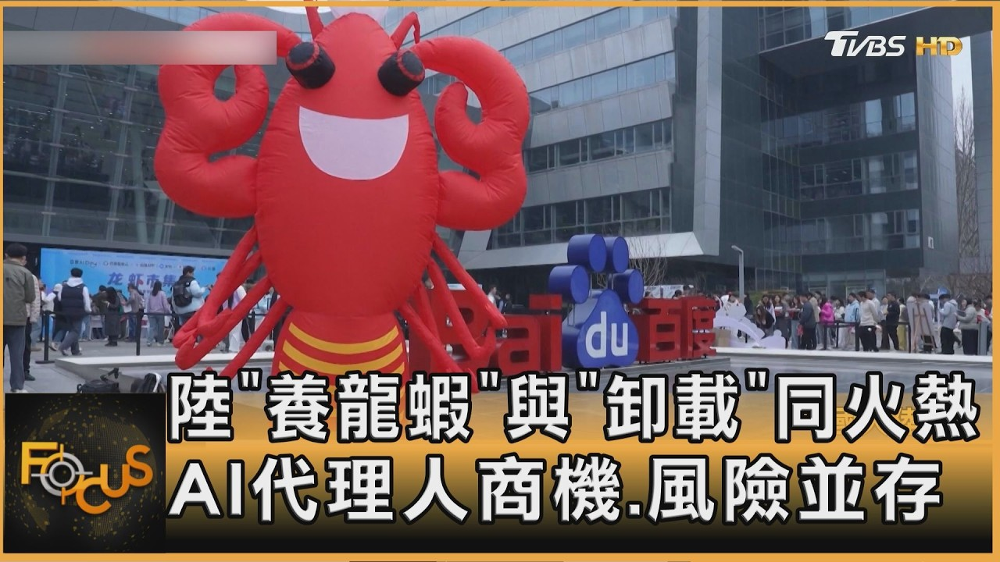

風險警示：AI代理養龍蝦的潛在問題
⚠️⚠️⚠️❗❗ 注意：AI代理養龍蝦雖有助益，但需謹慎使用！❗❗⚠️⚠️⚠️

相關影片：復旦人工智能教授：未來3-5年，哪些工作會被AI取代？
技術風險
系統故障： AI代理依賴電力供應和網路連接，中斷可能導致養殖環境失控。
算法偏差： 不準確的數據或訓練不足可能導致錯誤的養殖決策。
生物安全風險
疾病傳播： 如果AI未能及時發現疾病，可能導致整個養殖場的龍蝦感染。
環境污染： 自動化系統故障可能造成水質污染或藥物過量使用。
經濟與法律風險
高額投資： 導入AI系統需要大量前期投資，回報期較長。
數據隱私： 養殖數據可能涉及商業機密，需注意保護。
建議：在使用AI代理前，務必進行充分測試並建立備用方案。